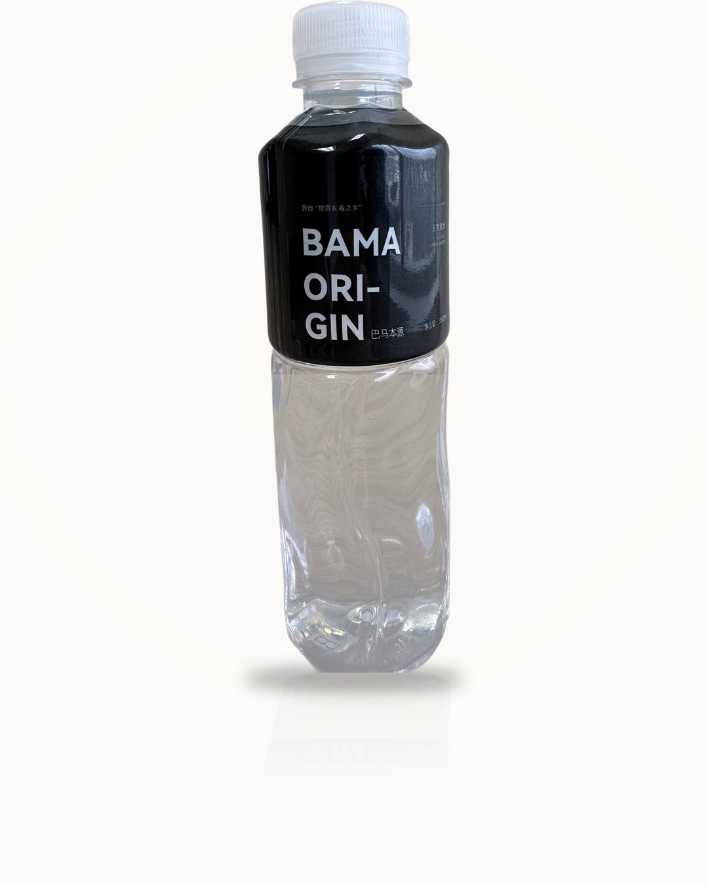

以一瓶好水為起點，鏈接世界長壽之鄉巴馬的自然饋贈，構建涵蓋健康飲用水、養老服務與農副產品的大健康生態服務。
源自廣西巴馬，面向健康意識強烈的客戶群——上班族、健身愛好者、家庭及注重養生的中高收入人士。
巴馬本源 BAMA ORIGIN 以巴馬甘龍洞優質水源為基礎，打造覆蓋多元場景的產品線，滿足日常飲用、運動補水、辦公室批量採購等不同需求，在香港策略性定位中高端健康瓶裝水市場。

數據如實摘自產品瓶標檢測信息，好水經得起檢驗。
| 成分 | 含量範圍 |
|---|---|
| 鍶（Sr） | 0.15–0.3 |
| 鈣（Ca） | 50–90 |
| 鎂（Mg） | 4–11 |
| 鉀（K） | 0.2–1.0 |
| 鈉（Na） | 1–5 |
| 鋅（Zn） | ≤0.1 |
| 硒（Se） | ≤0.005 |
| 釩（V） | 0.0006–0.0016 |
| 偏矽酸（H₂SiO₃） | 22–35 |
| 溶解性總固體 | 200–400 |
| pH 值（不含 CO₂） | 7.35–8.3 |
以上數據摘自產品瓶標，天然泉水、如實標示。
從方案規劃到配送售後，為家庭、辦公與企業場景提供全方位健康飲用水服務。
為客戶量身定制專業健康飲用水方案，覆蓋家庭、辦公與企業場景。
鹼性水、天然礦泉水、功能性電解質水多線產品，滿足不同客群需求。
辦公室與商業客戶批量優惠供應，快速配送、品質保障、退換無憂。
與健身中心、超市、餐飲及地產公司合作，共建健康飲用水生態聯盟。
以巴馬為核心，逐步構建「健康用水 + 養老服務 + 農副產品」三位一體的大健康生態服務體系。
深耕香港中高端健康瓶裝水市場，以巴馬優質水源打造明星產品，建立品牌口碑與渠道網絡。
依託巴馬「世界長壽之鄉」的自然環境與康養資源，規劃建設巴馬養老院及旅居養老項目，提供高品質康養服務。
將巴馬富硒農產品、特色山泉物產等農副產品納入金滙健康產業體系，從水源到餐桌，傳遞長壽之鄉的健康生活方式。
打通「水 · 養 · 食」全鏈條，打造覆蓋全生命周期的大健康生態服務，讓巴馬的自然饋贈惠及更多家庭。